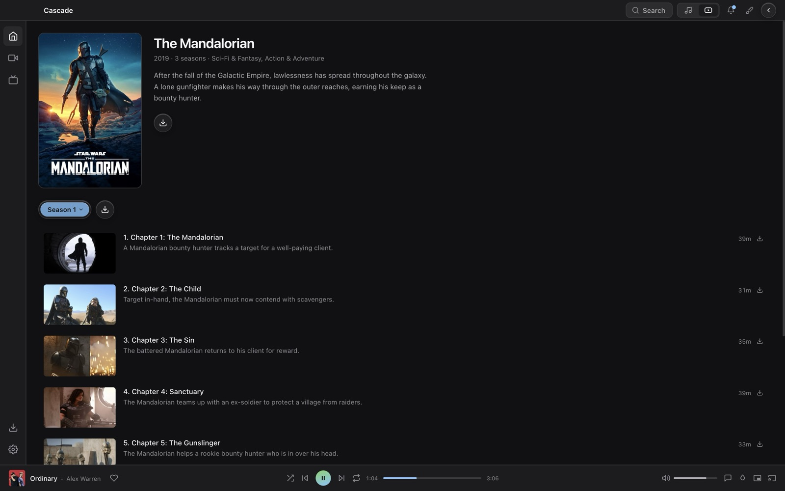

Why this one
It behaves like software you'd pay for
It's an app, not a tab
Your keyboard's play, pause and skip keys work from anywhere. The window has your platform's real controls, and it updates itself when there's a new release.
It asks for the best it can play
Every track is negotiated with your server first, so Cascade plays the original file whenever your machine can handle it and only asks for a conversion when it can't.
Nothing fails quietly
Cascade checks what your account is allowed to do and what your server has installed, then grays out what you can't use and tells you why.
Features
Made for listening, not just browsing
Everything here is in the release you can download today.
Click the player bar and it takes the whole screen
Album art at full size, the queue beside it, and lyrics that scroll in time with the song. Click a line to jump there. If a song isn't in English, Cascade offers to translate it, and the translating happens on your machine.
One track slides into the next
Cascade runs two players at once and fades between them on equal power curves, so the volume stays level across the join instead of dipping in the middle. The next track is loaded ahead of time and the change never stalls.
An equalizer that won't clip
Five bands with presets for flat, bass, vocal, treble and loudness. Push a band up and Cascade pulls the overall level down to match, so a boost never turns into distortion. Music and video keep separate settings.
Movies and TV in the same window
Seasons and episodes, resume where you stopped, and subtitle and audio track pickers. It stays off until you turn it on, library by library.

Cascade shows up in Jellyfin's Play On list, so you can start something from your phone.
Listen along with friends on the same server. Join with a six character code.
The whole app can shift to match the artwork of whatever is playing.
One toggle. Your server address and login never go to Discord.
If a format plays silently, Cascade notices, asks the server to convert, and remembers.
Use Quick Connect and no password is stored at all.
Download
Install it, point it at your server, done
Every build comes from a tagged release on GitHub. The desktop app updates itself after the first install. Release notes
Desktop
macOS calls the build an unidentified developer because it isn't signed with a paid Apple account. Open System Settings → Privacy & Security and click Open Anyway.
iPhone and Apple TV
Not on the App Store yet. Install the .ipa by sideloading it.
Privacy
What leaves your machine
Your music and artwork come from your own Jellyfin server. This is the complete list of anything else.
Cascade asks GitHub for new releases and reads their notes from GitHub or this site.
Off until you turn it on. Then the Discord app on your computer gets the track's title, artist and album, when it started and how long it runs, and a cover image. The cover comes from Apple's public iTunes search, asked by artist and album name. For a film or episode it is the title alone, with no cover. Pausing clears it, and your server address and login never go to Discord.
Translating runs on your device through Apple's own Translation, by way of a small command-line helper Cascade ships, so nothing is downloaded through Cascade. A language macOS doesn't have installed can be added in System Settings.
Translating runs on your iPhone through Apple's own Translation, built into iOS, so nothing is downloaded through Cascade.
The first time you translate a language, its model (35 to 70 MB) downloads from Cascade's GitHub releases or Mozilla, and is checked against a known fingerprint before use. Translating happens on your machine.
If you use it, a small room code passes through a relay. No audio is sent between listeners.
Get involved
Ask for what you want next
Feature requests and bug reports live on GitHub, where anyone can add to them. A thumbs-up on a request helps decide what gets built next.
Your server holds the media
Show it well with Cascade.